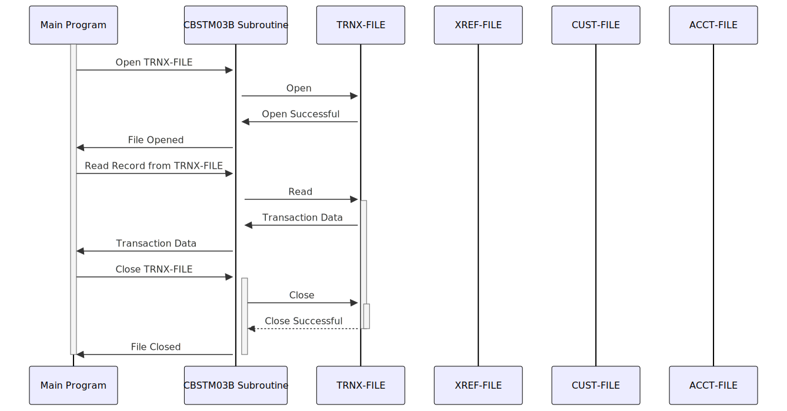

Gerado em: 1º de outubro de 2024
Título do Documento: Sub-rotina de Processamento de Arquivo de Transação de Cartão - Especificação Técnica
Descrição Resumida:
Esta sub-rotina atua como uma camada de acesso a dados centralizada dentro de um sistema de gerenciamento de cartão de crédito baseado em COBOL. Ela lida com interações com quatro arquivos de dados principais: TRNX-FILE (detalhes da transação), XREF-FILE (links de cartão para conta), CUST-FILE (informações do cliente) e ACCT-FILE (detalhes da conta).
A sub-rotina recebe instruções do programa principal, especificando a ação desejada (abrir, ler, fechar), o arquivo de destino e quaisquer chaves necessárias para recuperação de dados. Em seguida, ela executa a operação solicitada, recupera ou manipula dados conforme necessário e relata quaisquer erros de volta ao programa principal.
Histórias de Usuário: Como um sistema de processamento em lote, esta sub-rotina não envolve interação direta com o usuário. No entanto, sua funcionalidade suporta processos de back-end cruciais para atividades como geração de extratos de clientes, processamento de transações e gerenciamento de contas. Esses processos são essenciais para fornecer informações precisas e oportunas aos usuários finais e representantes de atendimento ao cliente.
Épico Relacionado: 4 - Processamento de Transações
Requisitos Técnicos:
LK-M03B-DD (nome do arquivo), LK-M03B-OPER (operação)LK-M03B-RCCUST-FILE e ACCT-FILE, o registro é recuperado usando a chave fornecida. Para TRNX-FILE e XREF-FILE, os registros são lidos sequencialmente.
LK-M03B-DD (nome do arquivo), LK-M03B-KEY (chave, se aplicável)LK-M03B-FLDT ou código de erro em LK-M03B-RCLK-M03B-DD (nome do arquivo)LK-M03B-RCLK-M03B-RC e retorne ao programa principal.CUST-FILE e ACCT-FILE.Modelos Relacionados:
FD-TRNXFILE-REC):
FD-TRNXS-ID: Identificador exclusivo da transação (composto pelo número do cartão e ID da transação)FD-TRNX-CARD: Número do cartão de créditoFD-TRNX-ID: ID da transaçãoFD-ACCT-DATA: Dados da conta relacionados à transação (detalhes não especificados no código fornecido)FD-XREFFILE-REC):
FD-XREF-CARD-NUM: Número do cartão de créditoFD-XREF-DATA: Dados associados à referência cruzada (detalhes não especificados)FD-CUSTFILE-REC):
FD-CUST-ID: ID do clienteFD-CUST-DATA: Dados do cliente (detalhes não especificados)FD-ACCTFILE-REC):
FD-ACCT-ID: ID da contaFD-ACCT-DATA: Dados da conta (detalhes não especificados)Configurações:
TRNXFILE: Nome do arquivo de transação (definição externa)XREFFILE: Nome do arquivo de referência cruzada (definição externa)CUSTFILE: Nome do arquivo do cliente (definição externa)ACCTFILE: Nome do arquivo da conta (definição externa)Melhorias de Código:
LK-M03B-RC, implemente um tratamento de erros mais informativo. Isso pode envolver:
1000-TRNXFILE-PROC, 2000-XREFFILE-PROC, etc.).Melhorias de Segurança:
Diagrama Conceitual:
–Made by “Smart Engineering” (by Compass.UOL)–